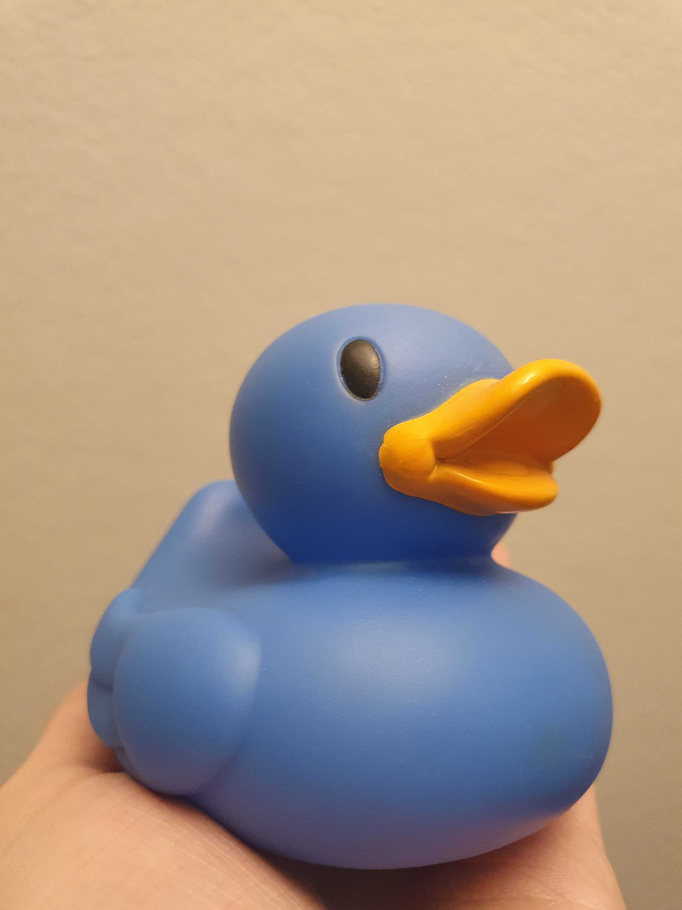
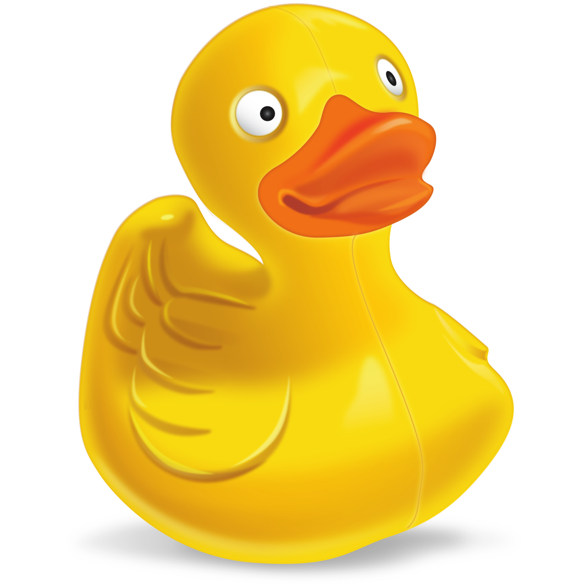

Badankor

badanka är en leksak eller dekoration som är formad som en anka. Materialet är gummi eller något gummiliknande material, vanligen vinylplast.
Badankor är vanligen gjorda för att lekas med vid bad. De är då ofta gjorda så att leksaken producerar ett enkelt pipande ljud om man klämmer till. På dyrare modeller kan ljudet istället vara ett genuint kvackande ljud precis som en riktig anka. Badankor kan ofta ha hål i näbben så att man genom att klämma på den kan få ankan att spruta vatten. De är normalt konstruerade så att de flyter när de hamnar i vattnet.
Det är inte känt vem som skapade den första badankan men det är troligt att detta skedde i slutet av 1800-talet när andra leksaker i gummi började produceras. Inom populärkulturen har figuren Ernie i TV-programmet Sesam gjort gummiankan känd, särskilt med sången Rubber Duckie.
Andra Ankor

Ankor är den domesticerade formen av gräsänder. Ett undantag är den tama myskankan som härstammar från den vilda myskanden. Ankor föds upp för köttets eller äggens skull. Hanen kallas andrake, drake, andrik eller ankbonde, honan oftast bara anka och ungarna ankungar eller ällingar. Ankor har platta simfötter. Ankor har oftast en orange näbb. Näbben är utvecklad för att kunna söka föda under vatten en kortare stund (en anka kan hålla sig under vatten i upp till 5 minuter).
Badankor och debugging

Felsökning i kod med hjälp av gummianka (en: Rubber duck debugging) är en metod för att felsöka kod. Namnet är en referens till boken The Pragmatic Programmer, där en programmerare ofta bär runt på en gummianka och felsöker sin kod genom att tvinga sig själv att förklara den, rad för rad, för ankan. Denna teknik har många andra namn som inbegriper olika livlösa objekt.
Många programmerare har upplevt att när de förklarat sin kod för någon annan, till och med någon som inte kan något om programmering, har de själva upptäckt problem i koden. När de beskrivit vad koden ska göra, och observerat vad den egentligen gör, uppenbarar sig problemen.
I allmänhet kan det också fungera bra att beskriva ett ämne man själv är välbekant med för någon annan för att se på ämnet ur ett annat perspektiv, vilket i sin tur kan skapa en djupare förståelse. Genom att använda ett livlöst objekt kan programmeraren uppnå en djupare förståelse för eventuella problem i koden utan att behöva störa någon annan.